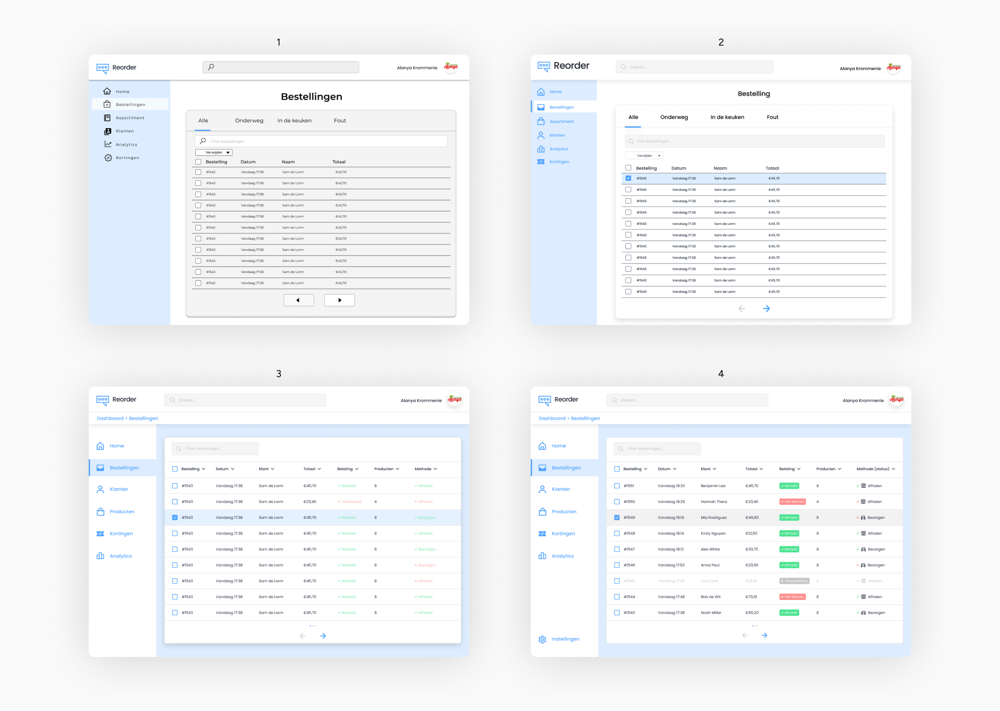

Reorder
Overview
For my 2nd year internship, I have the pleasure of working with Generous Studio. I worked on a project called Reorder, which is a service that helps grow small businesses by facilitating product sales via WhatsApp.
Roles
- UI/UX Design
- User Research
Tools used
- Figma
- Maze
Project context
- February 2022
- Group project
Problem
How Do You Sell Products/Food Without Using a Paid App?
Reorder needed a service to help small businesses sell their products, using WhatsApp as the main app for taking orders. The old homepage made it seem like the service was something created by WhatsApp itself, so they wanted to rebrand it and make it feel like a completely new, standalone brand.
My goal was to rebrand the Reorder service and help with designing the CMS (Content Management System): a tool that helps users easily create and manage website content, like text and images, as well as organize data.
Rebranding
Old and New Homepage
Process
My approach
User research
Understanding the Company & the User
The service is designed for small businesses, while the users are individuals who want to place orders easily and without any difficulties.
Company Insights
The brand doesn't feel distinctive enough
Companies often find it confusing that the brand looks a lot like WhatsApp when it's supposed to be a distinct brand.
How to show the user how it works?
When landing on the homescreen users find it hard to understand how the service works.
Is the service itself distinctive enough?
Is the service unique, or is there already something similar on the market? And why is this better than a typical ordering app?
User Insights
But how does it work?
Users find it hard to understand how it works and often feel frustrated when trying to place an order.
What if it doesn't work?
Users don't know what to do when the chat doesn't work, leaving them confused and unable to place their orders.
Does it work the same as when I order at a different shop with the same service?
Every shop or company sells different products, and users find it difficult when each ordering process is different.
Design & Testing
How Does It work, and How Do I Visualize It?
All codes consist of three letters and a number. The letters indicate the category, for example: Pizza = PIZ. They are always the first three letters of a category, so: Snacks = SNA. The number indicates the specific dish and follows the order of the menu. This can be seen in the example above. If a customer wants to order a dish multiple times, an "X" is added to the code followed by a number representing the desired quantity, for example: SNA22X3. To submit the entire order, the customer places dashes between the dishes, for example: SNA22-B&W2-PIZ3-PIZ4X2.
CMS (Content Management System)
For the next step, I had to design a CMS where the company could upload their products, manage inventory, view all product details, track sales performance, and monitor relevant data.
Home Screen
- The first design I created had several flaws. I didn't utilize a grid system, and the typeface was not consistent with the branding.
- For the second design I made use of a grid system and changed to fontface to Poppins.
- The third design I changed the background the color blue to have more contrast.
- For the final iteration, I added a settings button and changed the error message back to red to ensure it stands out clearly.
Order Screen
- In the first design, I used too many fonts, which made the CMS feel inconsistent.
- In the second design, I used the given icon pack and changed the buttons so the CMS felt more cohesive.
- For the third design, I changed the background to blue to create higher contrast between the elements. Using Fitts' Law, I made the navigation elements larger and added more spacing between them.
- For the final design, I added a settings button and updated the "pickup or delivery" text to a black icon with text and a checkmark to make it easier to scan and understand. I also included the status in brackets to clearly show the current state.
Chatbot
I utilized the MoSCoW method to categorize features according to their impact on user engagement. Features such as personalized goal tracking and budget reminders were given higher priority as they directly address user needs.From the diverse research participants, I gained valuable insights into their preferences and requirements.
Chatbot
This chatbot helps the user
Testing
Now let's test it out.
Task 1: Manually adding a saving goal
You just planned an exciting vacation. You want to start saving up for the flight and accommodations now. Please show me the process of how you would set up that goal.
92.9%
Task Completion Rate
Task 2: Adding money to a saving goal
You have set up a goal before and want to add money to save up. Please show me the process of how you would add money to the goal.
"Task Completion Rate is low because it was hard to find the button to add a goal"
23.7%
Task Completion Rate
Task 3: Adding money to a saving goal and try to get an achievement
Now that you're back to your list of savings, complete the process of adding money to the first saving goal to earn the achievement.
87.5%
Task Completion Rate
Prototype
Final product
Reflection
Learnings and takeaways
Through this initial UX project, I gained valuable practical experience by applying theoretical knowledge to real-world challenges. I learned to conduct user research, identify user pain points, and develop solutions. The project also helped me improve my skills in creating intuitive UI designs and conducting usability tests with end users, making it an incredibly rewarding experience.